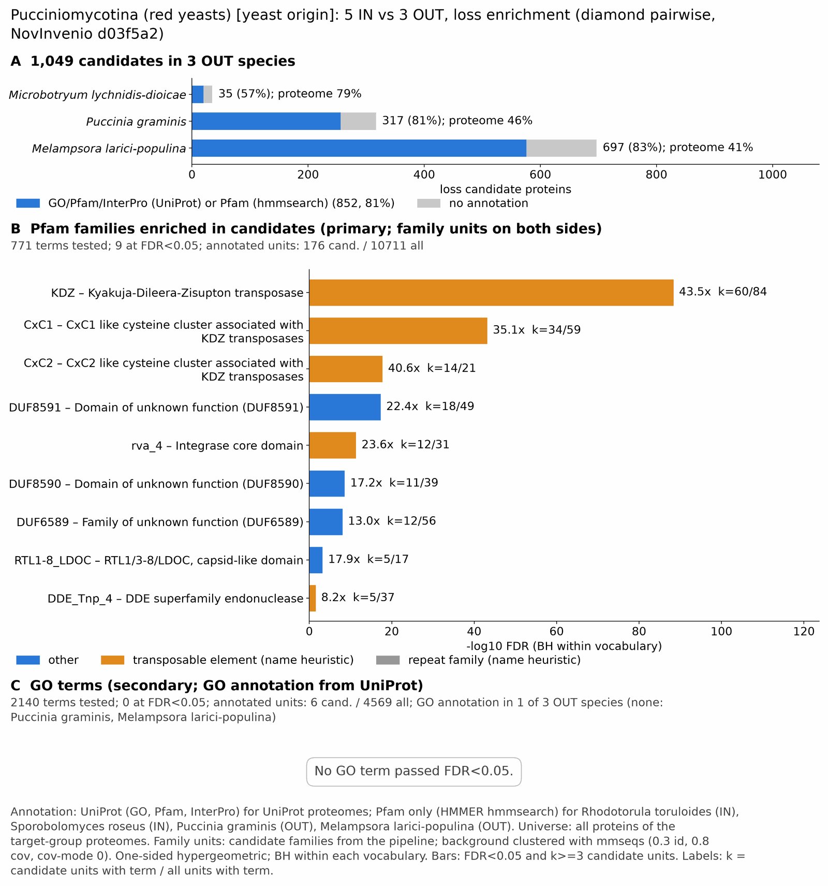

yc pucciniomycotina: functional enrichment (loss)
One-sided hypergeometric test per term; Benjamini-Hochberg FDR within each scope, level and vocabulary. Candidates are the loss candidates: gene families present in the OUT group and absent from the IN group. Universe: proteome. Background clustered: True (40639 sequences in 25701 clusters, mmseqs easy-cluster --min-seq-id 0.3 -c 0.8). Family level: one unit per candidate family and per background cluster.
Sources: Pfam: 2026-01-27-Pfam38.2; InterPro entries: 110.0; GO: releases/2026-07-26; analysis generated 2026-10-24T14:43:31. Source tables: /bigdata/stajichlab/jstajich/projects/NovInvenio_Investigations/studies/fungi/yeast_convergence/yc_pucciniomycotina/analysis/enrichment/outputs/loss/proteome_clustered.
Full record: PROVENANCE. Run report: report.html.
Related: yeast_convergence: comparison across contrasts
- Annotation provenance is not fully recorded: PROVENANCE.yaml lists the per-species annotation files and their checksums, but not the UniProt release they come from.
- GO results are secondary. GO annotations include computational evidence (IEA, IBA); the GO evidence column shows if a term has non-IEA support.
- Candidate families (pipeline clustering of candidates) and background clusters (mmseqs clustering of the background proteome) are made by different runs, so family-level counts are not fully comparable.
- Low annotation: the candidate set has less than 50% annotation for InterPro 1.9%, GO 0.6%. Enrichment for these vocabularies has low power.
- GO and InterPro cover only 1 of 3 species: Micrlych. No GO and InterPro annotation for Puccgram, Melalari; these species add no units to the GO and InterPro tests, so those results describe the covered species only.
Summary figure

Annotation coverage
Fraction of proteins with at least one term per vocabulary. Universe = all proteins of the species; candidates = the candidate set.
| Species | Set | Proteins | Pfam | Pfam clan | InterPro | GO | Any |
|---|---|---|---|---|---|---|---|
| Micrlych | universe | 7354 | 72.3% | 59.0% | 78.4% | 67.7% | 78.8% |
| Micrlych | candidates | 35 | 54.3% | 51.4% | 57.1% | 17.1% | 57.1% |
| Puccgram | universe | 15978 | 45.8% | 38.2% | 0.0% | 0.0% | 45.8% |
| Puccgram | candidates | 317 | 80.8% | 77.6% | 0.0% | 0.0% | 80.8% |
| Melalari | universe | 18356 | 41.2% | 34.3% | 0.0% | 0.0% | 41.2% |
| Melalari | candidates | 697 | 82.6% | 81.9% | 0.0% | 0.0% | 82.6% |
| ALL_OUT | universe | 41688 | 48.5% | 40.2% | 13.8% | 11.9% | 49.6% |
| ALL_OUT | candidates | 1049 | 81.1% | 79.6% | 1.9% | 0.6% | 81.2% |
Tests summary
Per vocabulary: terms with FDR < 0.05 / terms tested. Protein level counts proteins; family level counts candidate families and background clusters.
| Scope | Level | Cand. units | Pfam sig / tested | Pfam clan sig / tested | InterPro sig / tested | GO sig / tested |
|---|---|---|---|---|---|---|
| whole_set | family | 291 | 9 / 771 | 4 / 297 | 1 / 607 | 0 / 2140 |
| whole_set | protein | 1049 | 11 / 1474 | 4 / 368 | 1 / 723 | 0 / 2228 |
| Melalari | family | 167 | 8 / 347 | 5 / 206 | 0 / 0 (not_available_no_annotated_units) | 0 / 0 (not_available_no_annotated_units) |
| Melalari | protein | 697 | 8 / 439 | 4 / 215 | 0 / 0 (not_available_no_annotated_units) | 0 / 0 (not_available_no_annotated_units) |
| Micrlych | family | 34 | 1 / 228 | 1 / 199 | 1 / 607 | 0 / 2140 |
| Micrlych | protein | 35 | 1 / 282 | 1 / 208 | 1 / 723 | 0 / 2228 |
| Puccgram | family | 121 | 9 / 353 | 4 / 202 | 0 / 0 (not_available_no_annotated_units) | 0 / 0 (not_available_no_annotated_units) |
| Puccgram | protein | 317 | 11 / 479 | 4 / 229 | 0 / 0 (not_available_no_annotated_units) | 0 / 0 (not_available_no_annotated_units) |
Top 25 Pfam terms (whole set, family level)
25 rows shown, ordered by FDR then p-value; 9 have FDR < 0.05 (bold). 6 are tagged TE: transposable-element families, flagged by name (heuristic, not a test).
| Term | Name | k / N cand. | n / M bg | Fold | FDR (BH) |
|---|---|---|---|---|---|
| PF18758 | KDZ: Kyakuja-Dileera-Zisupton transposase TE | 60 / 176 | 84 / 10711 | 43.47 | 4.27e-89 |
| PF18802 | CxC1: CxC1 like cysteine cluster associated with KDZ transposases TE | 34 / 176 | 59 / 10711 | 35.071 | 6.31e-44 |
| PF18803 | CxC2: CxC2 like cysteine cluster associated with KDZ transposases TE | 14 / 176 | 21 / 10711 | 40.572 | 1.68e-18 |
| PF29852 | DUF8591: Domain of unknown function (DUF8591) | 18 / 176 | 49 / 10711 | 22.356 | 4.52e-18 |
| PF24764 | rva_4: Integrase core domain TE | 12 / 176 | 31 / 10711 | 23.558 | 4.41e-12 |
| PF29850 | DUF8590: Domain of unknown function (DUF8590) | 11 / 176 | 39 / 10711 | 17.165 | 2.49e-09 |
| PF20231 | DUF6589: Family of unknown function (DUF6589) | 12 / 176 | 56 / 10711 | 13.041 | 8.73e-09 |
| PF16297 | RTL1-8_LDOC: RTL1/3-8/LDOC, capsid-like domain | 5 / 176 | 17 / 10711 | 17.899 | 5.75e-04 |
| PF13359 | DDE_Tnp_4: DDE superfamily endonuclease TE | 5 / 176 | 37 / 10711 | 8.224 | 0.028 |
| PF01609 | DDE_Tnp_1: Transposase DDE domain TE | 3 / 176 | 11 / 10711 | 16.598 | 0.050 |
| PF00271 | Helicase_C: Helicase conserved C-terminal domain | 7 / 176 | 136 / 10711 | 3.132 | 0.498 |
| PF17667 | Pkinase_fungal: Fungal protein kinase | 3 / 176 | 28 / 10711 | 6.52 | 0.679 |
| PF00270 | DEAD: DEAD/DEAH box helicase | 6 / 176 | 122 / 10711 | 2.993 | 0.904 |
| PF01585 | G-patch: G-patch domain | 2 / 176 | 13 / 10711 | 9.363 | 1.000 |
| PF00505 | HMG_box: HMG (high mobility group) box | 2 / 176 | 18 / 10711 | 6.762 | 1.000 |
| PF00638 | Ran_BP1: RanBP1 domain | 1 / 176 | 5 / 10711 | 12.172 | 1.000 |
| PF01323 | DSBA: DSBA-like thioredoxin domain | 1 / 176 | 5 / 10711 | 12.172 | 1.000 |
| PF02182 | SAD_SRA: SAD/SRA domain | 1 / 176 | 5 / 10711 | 12.172 | 1.000 |
| PF03969 | AFG1_ATPase: AFG1-like ATPase | 1 / 176 | 5 / 10711 | 12.172 | 1.000 |
| PF22666 | Glyco_hydro_2_N2: Glycosyl hydrolase 2 galactose-binding domain-like | 1 / 176 | 5 / 10711 | 12.172 | 1.000 |
| PF24840 | NTF2_SigF: SigF NTF2-like domain | 1 / 176 | 5 / 10711 | 12.172 | 1.000 |
| PF00651 | BTB: BTB/POZ domain | 1 / 176 | 6 / 10711 | 10.143 | 1.000 |
| PF01743 | PolyA_pol: Poly A polymerase head domain | 1 / 176 | 6 / 10711 | 10.143 | 1.000 |
| PF00319 | SRF-TF: SRF-type transcription factor (DNA-binding and dimerisation domain) | 1 / 176 | 8 / 10711 | 7.607 | 1.000 |
| PF00536 | SAM_1: SAM domain (Sterile alpha motif) | 1 / 176 | 8 / 10711 | 7.607 | 1.000 |
Top 25 InterPro terms (whole set, family level)
25 rows shown, ordered by FDR then p-value; 1 have FDR < 0.05 (bold).
| Term | Name | k / N cand. | n / M bg | Fold | FDR (BH) |
|---|---|---|---|---|---|
| IPR040521 | Family:Kyakuja-Dileera-Zisupton transposase | 5 / 19 | 5 / 5290 | 278.421 | 2.05e-10 |
| IPR040976 | Domain:Fungal-type protein kinase | 2 / 19 | 15 / 5290 | 37.123 | 0.379 |
| IPR000210 | Domain:BTB/POZ domain | 1 / 19 | 7 / 5290 | 39.774 | 1.000 |
| IPR003653 | Domain:Ulp1 protease family, C-terminal catalytic domain | 1 / 19 | 8 / 5290 | 34.803 | 1.000 |
| IPR008266 | Active_site:Tyrosine-protein kinase, active site | 1 / 19 | 11 / 5290 | 25.311 | 1.000 |
| IPR000719 | Domain:Protein kinase domain | 2 / 19 | 105 / 5290 | 5.303 | 1.000 |
| IPR011333 | Homologous_superfamily:SKP1/BTB/POZ domain superfamily | 1 / 19 | 16 / 5290 | 17.401 | 1.000 |
| IPR036397 | Homologous_superfamily:Ribonuclease H superfamily | 1 / 19 | 22 / 5290 | 12.656 | 1.000 |
| IPR011009 | Homologous_superfamily:Protein kinase-like domain superfamily | 2 / 19 | 140 / 5290 | 3.977 | 1.000 |
| IPR012337 | Homologous_superfamily:Ribonuclease H-like superfamily | 1 / 19 | 26 / 5290 | 10.709 | 1.000 |
| IPR038765 | Homologous_superfamily:Papain-like cysteine peptidase superfamily | 1 / 19 | 38 / 5290 | 7.327 | 1.000 |
| IPR036390 | Homologous_superfamily:Winged helix DNA-binding domain superfamily | 1 / 19 | 50 / 5290 | 5.568 | 1.000 |
| IPR012340 | Homologous_superfamily:Nucleic acid-binding, OB-fold | 1 / 19 | 55 / 5290 | 5.062 | 1.000 |
| IPR036388 | Homologous_superfamily:Winged helix-like DNA-binding domain superfamily | 1 / 19 | 56 / 5290 | 4.972 | 1.000 |
| IPR001650 | Domain:Helicase, C-terminal domain-like | 1 / 19 | 64 / 5290 | 4.35 | 1.000 |
| IPR029063 | Homologous_superfamily:S-adenosyl-L-methionine-dependent methyltransferase superfamily | 1 / 19 | 80 / 5290 | 3.48 | 1.000 |
| IPR027417 | Homologous_superfamily:P-loop containing nucleoside triphosphate hydrolase | 1 / 19 | 291 / 5290 | 0.957 | 1.000 |
| IPR000008 | Domain:C2 domain | 0 / 19 | 14 / 5290 | 0.0 | 1.000 |
| IPR000014 | Domain:PAS domain | 0 / 19 | 11 / 5290 | 0.0 | 1.000 |
| IPR000073 | Domain:Alpha/beta hydrolase fold-1 | 0 / 19 | 19 / 5290 | 0.0 | 1.000 |
| IPR000086 | Domain:NUDIX hydrolase domain | 0 / 19 | 11 / 5290 | 0.0 | 1.000 |
| IPR000089 | Domain:Biotin/lipoyl attachment | 0 / 19 | 7 / 5290 | 0.0 | 1.000 |
| IPR000182 | Domain:GNAT domain | 0 / 19 | 18 / 5290 | 0.0 | 1.000 |
| IPR000192 | Domain:Aminotransferase class V domain | 0 / 19 | 6 / 5290 | 0.0 | 1.000 |
| IPR000195 | Domain:Rab-GAP-TBC domain | 0 / 19 | 12 / 5290 | 0.0 | 1.000 |
Top 15 GO terms (whole set, family level) — secondary, computational evidence (IEA/IBA) included
15 rows shown, ordered by FDR then p-value; 0 have FDR < 0.05 (bold).
| Term | Name | k / N cand. | n / M bg | Fold | FDR (BH) | GO evidence | Families with non-IEA |
|---|---|---|---|---|---|---|---|
| GO:0004672 | molecular_function:protein kinase activity | 2 / 6 | 127 / 4569 | 11.992 | 1.000 | IEA_only | 0 |
| GO:0016891 | molecular_function:RNA endonuclease activity producing 5'-phosphomonoesters, hydrolytic mechanism | 1 / 6 | 13 / 4569 | 58.577 | 1.000 | IEA_only | 0 |
| GO:0140096 | molecular_function:catalytic activity, acting on a protein | 3 / 6 | 499 / 4569 | 4.578 | 1.000 | IEA_only | 0 |
| GO:0016773 | molecular_function:phosphotransferase activity, alcohol group as acceptor | 2 / 6 | 177 / 4569 | 8.605 | 1.000 | IEA_only | 0 |
| GO:0016301 | molecular_function:kinase activity | 2 / 6 | 193 / 4569 | 7.891 | 1.000 | IEA_only | 0 |
| GO:0004521 | molecular_function:RNA endonuclease activity | 1 / 6 | 23 / 4569 | 33.109 | 1.000 | IEA_only | 0 |
| GO:0019783 | molecular_function:ubiquitin-like protein peptidase activity | 1 / 6 | 34 / 4569 | 22.397 | 1.000 | IEA_only | 0 |
| GO:0016772 | molecular_function:transferase activity, transferring phosphorus-containing groups | 2 / 6 | 274 / 4569 | 5.558 | 1.000 | IEA_only | 0 |
| GO:0008234 | molecular_function:cysteine-type peptidase activity | 1 / 6 | 36 / 4569 | 21.153 | 1.000 | IEA_only | 0 |
| GO:0004540 | molecular_function:RNA nuclease activity | 1 / 6 | 38 / 4569 | 20.039 | 1.000 | IEA_only | 0 |
| GO:0004519 | molecular_function:endonuclease activity | 1 / 6 | 44 / 4569 | 17.307 | 1.000 | IEA_only | 0 |
| GO:0000978 | molecular_function:RNA polymerase II cis-regulatory region sequence-specific DNA binding | 1 / 6 | 46 / 4569 | 16.554 | 1.000 | IEA_only | 0 |
| GO:0000987 | molecular_function:cis-regulatory region sequence-specific DNA binding | 1 / 6 | 53 / 4569 | 14.368 | 1.000 | IEA_only | 0 |
| GO:0000977 | molecular_function:RNA polymerase II transcription regulatory region sequence-specific DNA binding | 1 / 6 | 54 / 4569 | 14.102 | 1.000 | IEA_only | 0 |
| GO:0004518 | molecular_function:nuclease activity | 1 / 6 | 74 / 4569 | 10.291 | 1.000 | IEA_only | 0 |
Actin cytoskeleton controls
Known actin-related families and how many of their proteins pass each filter. Protein ID columns are left out.
| control | pfam_ids | desc_regex | OUT_universe | OUT_in_matrix | OUT_pass_outgroup_rule | candidates | near_miss_in1 | near_miss_in2 | n_Micrlych | n_Puccgram | n_Melalari | n_Rhodtoru | n_Rhodmuci | n_Rhodgram | n_Sporrose | n_Leuccrea |
|---|---|---|---|---|---|---|---|---|---|---|---|---|---|---|---|---|
| Arp2/3 ARPC2 (P34-Arc) | PF04045 | 2 | 2 | 0 | 0 | 0 | 0 | 1 | 1 | 0 | 1 | 1 | 1 | 1 | 1 | |
| Arp2/3 ARPC3 (P21-Arc) | PF04062 | 3 | 3 | 3 | 0 | 0 | 0 | 1 | 1 | 1 | 1 | 1 | 1 | 1 | 0 | |
| Arp2/3 ARPC4 | PF05856 | 4 | 4 | 4 | 0 | 0 | 0 | 1 | 1 | 2 | 1 | 1 | 1 | 1 | 1 | |
| Arp2/3 ARPC5 (P16-Arc) | PF04699 | 3 | 3 | 3 | 0 | 0 | 0 | 1 | 1 | 1 | 1 | 1 | 1 | 1 | 1 | |
| Arp2/3 ARPC1 (description only) | arp2/3 complex.*(41|p41|subunit 1)|ARPC1 | 0 | 0 | 0 | 0 | 0 | 0 | 0 | 0 | 0 | 0 | 1 | 1 | 0 | 0 | |
| Arp2 / Arp3 (description only) | actin-related protein (2|3)\b|\bARP[23]\b | 6 | 6 | 5 | 0 | 0 | 0 | 6 | 0 | 0 | 6 | 8 | 6 | 0 | 5 | |
| WAVE complex NCKAP1 | PF09735 | 0 | 0 | 0 | 0 | 0 | 0 | 0 | 0 | 0 | 0 | 0 | 0 | 0 | 0 | |
| WAVE complex CYFIP (FragX_IP) | PF05994 | 0 | 0 | 0 | 0 | 0 | 0 | 0 | 0 | 0 | 0 | 0 | 0 | 0 | 0 | |
| WAVE complex ABI | PF07815|PF27594 | 0 | 0 | 0 | 0 | 0 | 0 | 0 | 0 | 0 | 0 | 0 | 0 | 0 | 0 | |
| SCAR/WAVE (SCAR_helical) | PF27569 | 0 | 0 | 0 | 0 | 0 | 0 | 0 | 0 | 0 | 0 | 0 | 0 | 0 | 0 | |
| WASP family (WH1) | PF00568 | 5 | 5 | 5 | 0 | 0 | 0 | 1 | 2 | 2 | 1 | 1 | 1 | 1 | 1 | |
| WH2 motif (WASP, WAVE, others) | PF02205 | 5 | 5 | 3 | 0 | 0 | 0 | 2 | 1 | 2 | 1 | 2 | 3 | 2 | 2 | |
| Formin FH2 | PF02181 | 5 | 5 | 4 | 0 | 0 | 0 | 2 | 1 | 2 | 2 | 2 | 1 | 2 | 2 | |
| Formin Drf_GBD / Drf_FH3 / Drf_DAD | PF06371|PF06367|PF06345 | 8 | 8 | 6 | 0 | 0 | 0 | 2 | 3 | 3 | 3 | 3 | 4 | 3 | 3 | |
| Ena/VASP (VASP_tetra) | PF08776 | 0 | 0 | 0 | 0 | 0 | 0 | 0 | 0 | 0 | 0 | 0 | 0 | 0 | 0 | |
| Coronin (description only) | coronin | 1 | 1 | 1 | 0 | 0 | 0 | 1 | 0 | 0 | 1 | 2 | 1 | 0 | 1 | |
| Cortactin (HS1_rep) | PF02218 | 0 | 0 | 0 | 0 | 0 | 0 | 0 | 0 | 0 | 0 | 0 | 0 | 0 | 0 | |
| Myosin 2 tail (Myosin_tail_1) | PF01576 | 0 | 0 | 0 | 0 | 0 | 0 | 0 | 0 | 0 | 0 | 0 | 0 | 0 | 0 | |
| Myosin head (all myosins) | PF00063 | 17 | 17 | 17 | 0 | 0 | 0 | 5 | 5 | 7 | 5 | 5 | 5 | 5 | 5 |
Page written by bin/generate_enrichment_page.py.